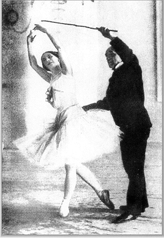

French method
The French method is the basis of all ballet training. When Louis XIV created the Académie Royale de Danse in 1661, he helped to create the codified technique still used today by those in the profession, regardless of what method of training they adhere to. The French school was particularly revitalized under Rudolf Nureyev, in the 1980s. His influence revitalized and renewed appreciation for this style, and has drastically shaped ballet as a whole. In fact, the French school is now sometimes referred to as Nureyev school. The French method is often characterized by technical precision, fluidity and gracefulness, and elegant, clean lines. For this style, fast footwork is often utilized in order to give the impression that the performers are drifting lightly across the stage. Two important trademarks of this technique are the specific way in which the port de bras and the épaulement are performed, more rounded than when dancing in a Russian style, but not as rounded as the Danish style.
Vaganova method
The Vaganova method is a style of ballet training that emerged from Russian ballet, created by Agrippina Vaganova. After retiring from dance in 1916, Vaganova turned to teaching at the Leningrad Choreographic School in 1921. Her training method is now internationally recognized and her book, The Fundamentals of Classical Dance (1934), is a classic reference. This method is marked by the fusion of the classical French style, specifically elements from the Romantic era, with the athleticism of the Italian method, and the soulful passion of Russian ballet. She developed an extremely precise method of instruction in her book Basic Principles of Russian Classical dance (1948). This includes outlining when to teach technical components to students in their ballet careers, for how long to focus on it, and the right amount of focus at each stage of the student's career. These textbooks continue to be extremely important to the instruction of ballet today.
The method emphasizes development of strength, flexibility, and endurance for the proper performance of ballet. She espoused the belief that equal importance should be placed on the arms and legs while performing ballet, as this will bring harmony and greater expression to the body as a whole.

Cecchetti method
Developed by Enrico Cecchetti (1850-1928), this method is one known internationally for its intense reliance of the understanding of anatomy as it relates to classical ballet. The goal of this method is to instill important characteristics for the performance of ballet into students so that they do not need to rely on imitations of teachers. Important components for this method is the emphasis of balance, elevations, ballon, poise, and strength.
This method espouses the importance of recognizing that all parts of the body move together to create beautiful, graceful lines, and as such cautions against thinking of ballet in terms of the arms, legs, and neck and torso as separate parts. This method is well known for eight port de bras that are utilized
Bournonville method
The Bournonville method is a Danish method first devised by August Bournonville. Bournonville was heavily influenced by the early French ballet method due to his training with his father, Antoine Bournonville and other important French ballet masters. This method has many style differences that differentiate it from other ballet methods taught today. A key component is the use of diagonal épaulements, with the upper body turning towards the working foot typically. This method also incorporates very basic use of arms, pirouettes from a low développé position into seconde, and use of fifth position bras en bas for the beginning and end of movements.
The Bournonville method produces dancers who have beautiful ballon ("the illusion of imponderable lightness"